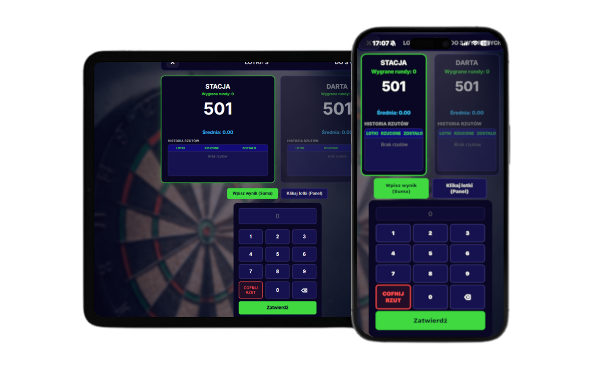

Gry
Oferujemy szeroki wybór gier dartowych, od klasycznych po nowoczesne, które można grać online z innymi graczami.
Wirtualny licznik, mecze Online, statystyki i społeczność
Zacznij grać już teraz!
Oferujemy szeroki wybór gier dartowych, od klasycznych po nowoczesne, które można grać online z innymi graczami.
Nasza platforma oferuje narzędzia do analizy i poprawy Twojej techniki, dzięki czemu możesz doskonalić swoje umiejętności.
Organizujemy regularne turnieje i zawody, w których możesz rywalizować z innymi graczami i zdobywać nagrody.
Rywalizuj w różnych konkurencjach, zdobywając punkty i awansując w rankingu.
Dołącz do naszej aktywnej społeczności graczy, dziel się doświadczeniami, znajdź partnerów do gry.
Śledź swoje postępy, analizuj wyniki i porównuj się z innymi graczami dzięki naszym zaawansowanym narzędziom.
Użyj naszego wirtualnego licznika, aby śledzić swoje wyniki podczas gry, niezależnie od tego, czy grasz online, czy offline.
Uruchomienie dedykowanej aplikacji mobilnej to kluczowy krok milowy w rozwoju naszej platformy. Dziś smartfon to nieodłączne centrum dowodzenia każdego pasjonata darta – naturalne środowisko do śledzenia wyników i doskonalenia umiejętności.
Nasze analizy jednoznacznie pokazują, że większość graczy – od amatorów po profesjonalistów – korzysta właśnie ze smartfonów. Gra bez aplikacji w zasięgu wzroku stała się dziś rzadkością.
Chcemy dotrzeć bezpośrednio do tej aktywnej społeczności. Naszym celem jest dostarczenie zaawansowanego narzędzia oraz stworzenie polskiej platformy, która doskonale rozumie potrzeby rodzimych graczy.
Wierzymy w siłę społeczności, dlatego każda uwaga i sugestia są dla nas priorytetem. Traktujemy użytkowników jak współtwórców i gwarantujemy, że każdy głos zostanie wysłuchany.
Aplikacja zadebiutuje jednocześnie na systemach Android oraz iOS, zapewniając bezproblemowy dostęp wszystkim graczom.
